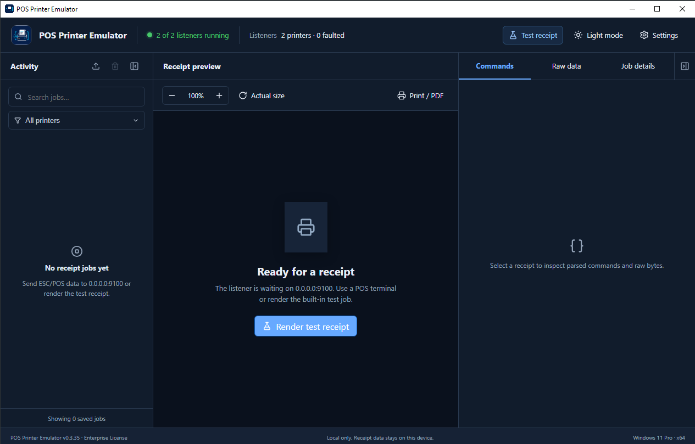
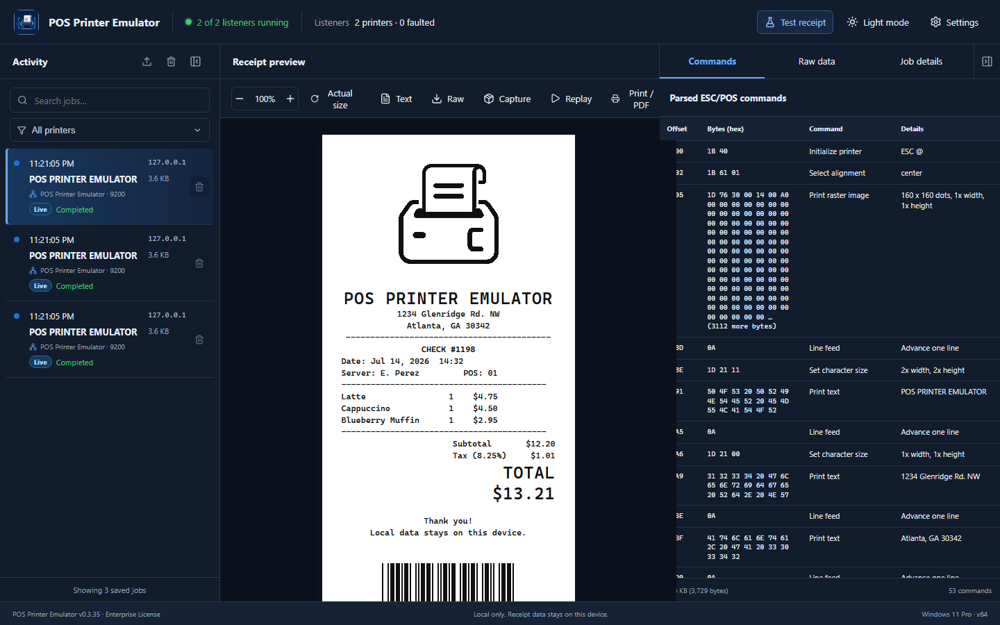
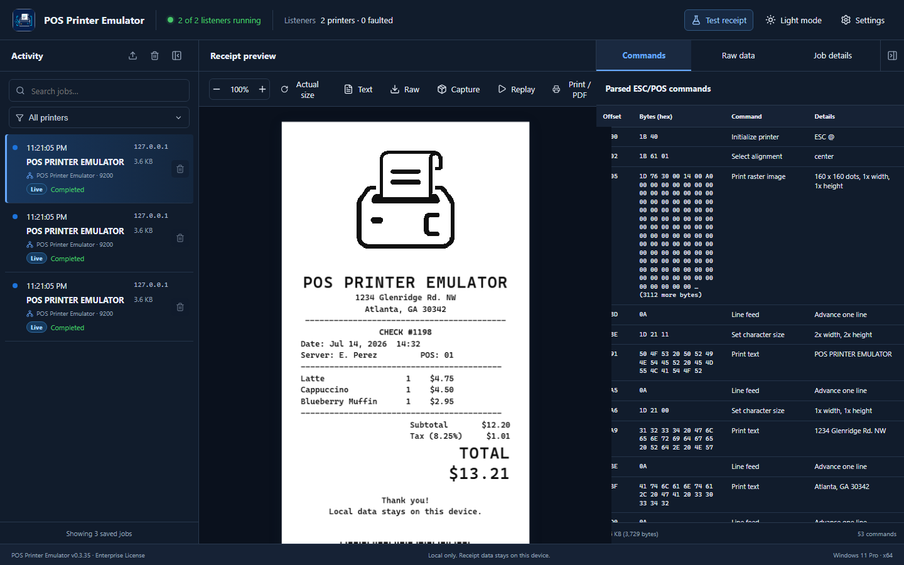
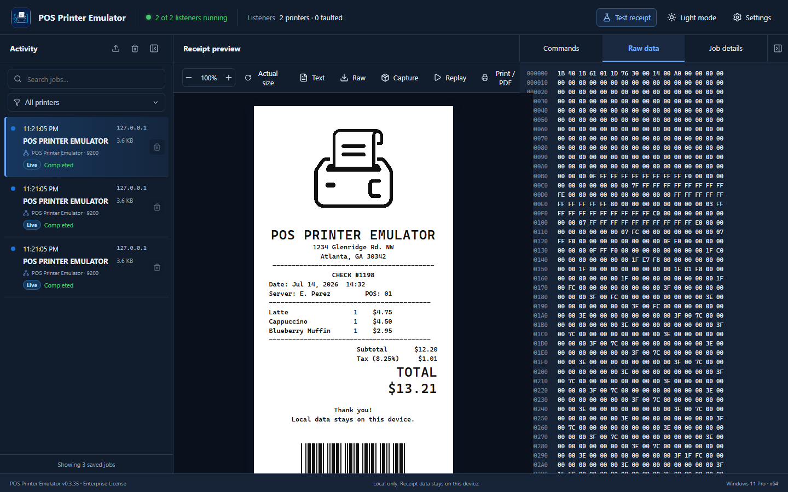
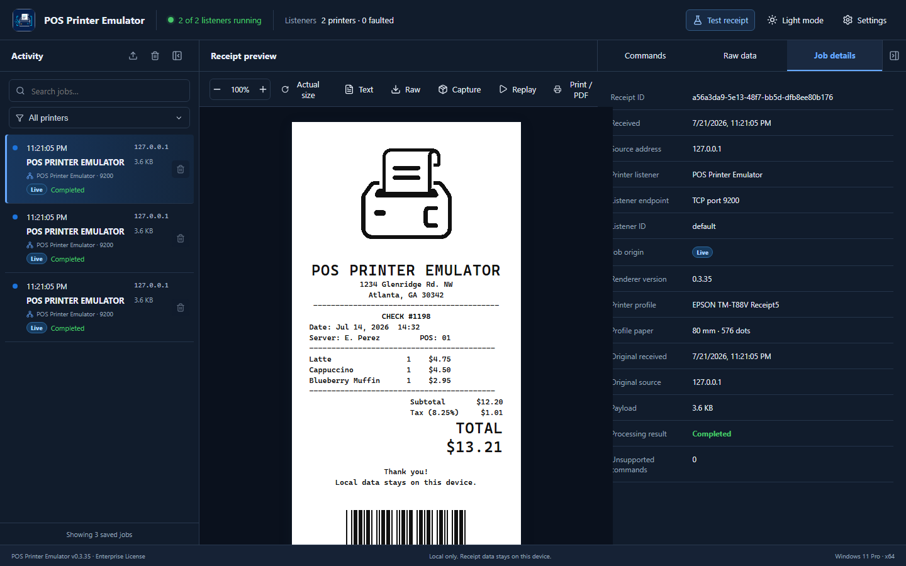
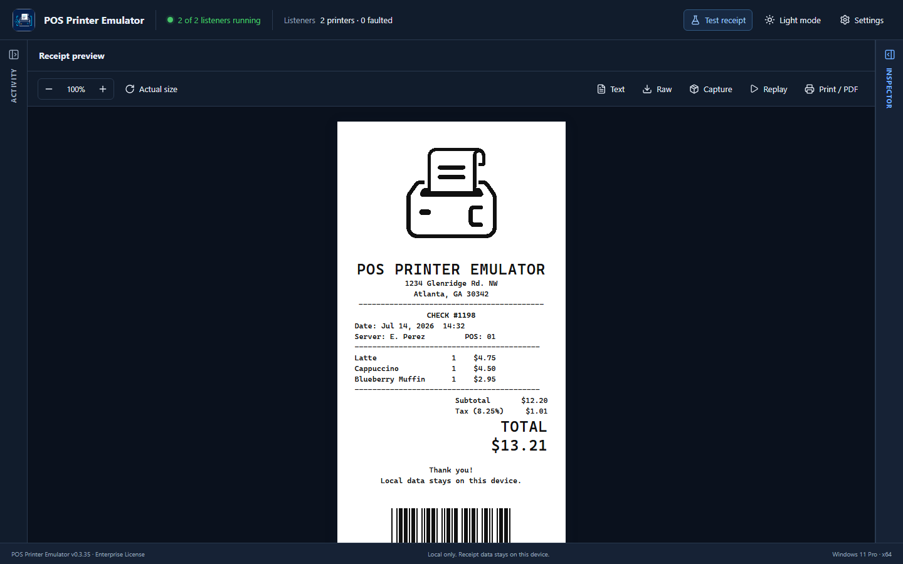

Start here: a green listener status means the emulator is ready. Send a receipt from the POS or select Test receipt, then choose the new job in Activity.
The main page at a glance
The main page is divided into three working areas. Activity finds the job, Receipt preview shows the result, and Inspector explains what the POS sent. The header monitors the emulator; the footer confirms version and license information.

Confirms service readiness, opens a test receipt, changes theme, and opens Settings.
Lists, searches, filters, imports, selects, and removes receipt jobs.
Renders the receipt and provides zoom, export, replay, print, and PDF actions.
Decodes ESC/POS commands, shows original bytes, and records job context.
Shows the app version, license tier, local-data notice, Windows edition, and architecture.
Main page overview
See the ready state, listener health, and the three areas used to review a receipt.
Header and listener health
The header answers the first troubleshooting question: Is the emulator ready to receive a receipt? It remains visible while you work.
| Item | What it tells you | How to use it |
|---|---|---|
| Listener status | A green dot and “Running (listening)” for one listener, or “2 of 2 listeners running” for multiple listeners. | Confirm at least one listener is running before sending a receipt. A stopped or faulted count means that printer needs attention. |
| Listener fact | One listener shows its bind address and TCP port. Multiple listeners show total printers and faulted printers. | Use the port when configuring the POS. Open Settings → Printer Listeners for individual endpoints. |
| Test receipt | Creates the built-in sample receipt without requiring a POS. | Use it after installation, after changing a profile or logo, or when separating an emulator problem from a POS problem. |
| Dark mode / Light mode | The currently available theme change. | Select it to switch themes. The choice is saved on this computer. |
| Settings | Opens licensing, printer setup, listeners, profiles, logos, state, backups, updates, and support. | Use Settings for configuration; return to the main page for everyday receipt work. |
Selecting Test receipt should add a completed job to Activity and display a formatted receipt almost immediately.
0.0.0.0:9100 means the listener accepts connections on available network interfaces. A POS on another computer must use this PC’s real IPv4 address—not 0.0.0.0.
Trial limitation: a test receipt counts as one of the five daily emulated jobs. The button is unavailable after the daily limit is reached.
Activity: find and manage jobs
Activity is the receipt inbox. New jobs appear here after the POS closes the connection or the listener’s idle-job timeout completes. Select a row to load its receipt and inspector data.

Information on every job
- Time and source address: when the job arrived and the network source that sent it.
- Preview title: useful text extracted from the receipt, such as a store or transaction heading.
- Payload size: the amount of original receipt data received.
- Printer listener: the listener name and port that accepted the job.
- Origin: Live, Imported, Replayed, or Sample, depending on how the job entered the app.
- Result and warnings: Completed confirms processing finished; a warning count identifies commands the renderer did not fully support.
Activity controls
| Control | Action | Best time to use it |
|---|---|---|
| Import ↑ | Imports a saved .bin payload or .ppecapture package. | Reproduce a customer receipt or inspect a capture without asking the POS to send it again. Available with Lite, Pro, or Enterprise. |
| Clear all 🗑 | Opens a confirmation before permanently removing all visible-scope jobs. | Clean a test session. When one printer is selected, only that printer’s jobs are removed. |
| Collapse Activity | Reduces Activity to a narrow edge button. | Give a long or wide receipt more room. Select the edge button to restore the panel. |
| Search jobs | Matches source, receipt preview text, status, origin, listener, port, or imported filename. | Find one transaction in a long history—for example, search a store heading, IP address, or listener name. |
| All printers filter | Shows all jobs or only jobs accepted by one listener. | Separate front-counter and drive-thru activity in multi-listener installations. |
| Job trash icon | Confirms and permanently removes only that job. | Remove an unwanted test or a receipt that should no longer remain in local history. |
Activity and job management
Review job information, use search and filters, and understand deletion confirmation.
Choose “Drive-Thru Printer · port 9101” in the filter. Activity now shows only receipts accepted by that listener, and Clear all affects only that filtered printer after confirmation.
Clearing a job also removes it from saved paid-license history. A deleted job can be recovered only if you previously exported a Raw or Capture file.
Trial limitation: Trial shows current-session jobs only. Lite, Pro, and Enterprise save local job history. All receipt data remains on this device unless you intentionally export or submit an approved support request.
Receipt preview and toolbar
The center panel turns ESC/POS data into a visual receipt. It uses the printer profile assigned to the listener, including paper width and supported formatting.
| Control | Purpose and expected result | Notes |
|---|---|---|
| − / percentage / + | Changes the on-screen preview from 50% through 160% in 10% steps. | Use zoom for readability. It does not change paper width, print size, or receipt data. |
| Actual size | Returns the preview to 100%. | Use after zooming when comparing two receipts consistently. |
| Text | Downloads extracted readable text as a .txt file. | Good for quick review; graphics and byte-level formatting are not preserved. |
| Raw | Downloads the original ESC/POS payload as a .bin file. | Best for exact reproduction and technical investigation. Treat it as sensitive receipt data. |
| Capture | Downloads a portable .ppecapture package with receipt and profile context. | Preferred when moving a reproducible test case to another POS Printer Emulator installation. |
| Replay | Processes the selected receipt again and adds a new Replayed job. | Use after changing a profile or stored logo. Replay does not ask the POS to resend. |
| Print / PDF | Opens the Windows print dialog for paper printing or a PDF printer. | Choose Microsoft Print to PDF when available. The final output depends on the selected Windows print driver and settings. |
Receipt preview tools
Zoom the receipt, understand exports and replay, then expand the canvas for long receipts.
What the preview can display
Supported text alignment, emphasis, character size, barcodes, QR codes, raster graphics, and imported stored logos are rendered on simulated thermal paper. Trial receipts show a visible TRIAL watermark.
Stored printer image warning: an Epson NV graphic command may contain only a key such as 00, not the original image pixels. Import and map the logo in Settings → Stored Logos. Until then, the preview correctly shows a placeholder.
Accuracy limitation: the preview explains what the emulator supports; a physical printer, driver, code page, or vendor-specific command can behave differently. Check the Commands warning count whenever exact reproduction matters.
Inspector: Commands, Raw data, and Job details
The right panel is the technical explanation for the selected receipt. Start with Commands for readable diagnosis, use Raw data for byte-level comparison, and use Job details for the surrounding context.
Commands

- Offset: byte position where the command begins, shown in hexadecimal.
- Bytes (hex): exact command bytes.
- Command: readable name such as Initialize printer, Select alignment, or Print raster image.
- Details: interpreted values such as center alignment, image dimensions, or text.
- Footer: original payload size and total parsed-command count.
Use it when: text is misaligned, a logo is missing, a barcode differs, or the warning count is greater than zero. Locate the highlighted command and compare its offset and bytes with the POS or printer documentation.
Raw data

Raw data displays the original payload as hexadecimal bytes with line offsets. It is useful for comparing two jobs or confirming that a control byte actually arrived. It is not intended to be edited inside the application.
Troubleshooting tip: if Raw data is present but the receipt is blank, check Commands for unsupported controls, image-only data, an unexpected code page, or a reset command. If the payload size is unexpectedly tiny, inspect how the POS closes or flushes its TCP connection.
Job details

Job details can include Receipt ID, received time, source address, printer listener, listener endpoint and ID, job origin, renderer version, printer profile, paper width and printable dots, captured profile, original receipt context, imported filename, parent job, payload size, processing result, and unsupported-command count.
Use it when: confirming which printer accepted a job, comparing a replay with its parent, documenting an imported capture, or including precise context in a support request. Receipt IDs and listener IDs are useful reference values; do not treat them as activation or authentication keys.
Job inspector
Move from readable ESC/POS commands to exact bytes and then to receipt context.
Layout, theme, and status footer
Activity and Inspector can each be collapsed independently. This is useful for long receipts, narrow screens, or presentations. The collapsed edge remains visible so the panel can be restored in one click.

Layout, theme, and footer
Collapse panels, switch theme, and use the footer when confirming environment details.
Status footer
- Left: installed POS Printer Emulator version and Trial, Lite, Pro, or Enterprise license tier.
- Center: reminder that receipt data is stored locally on the device.
- Right: Windows edition and x64 architecture, useful when choosing installers or reporting a problem.
Everyday example: validate a receipt
- Confirm the header is green and the intended printer listener is running.
- Send the receipt from the POS. For an emulator-only check, select Test receipt.
- Find the new job by its time, source, or printer and select it in Activity.
- Review the center preview for text, price alignment, totals, logo, barcode, and paper width.
- Open Commands and investigate any unsupported count or unexpected formatting.
- Use Job details to confirm the listener and printer profile.
- Export a Capture for repeatable testing, or Replay after changing a profile or stored logo.
- When finished, delete only the test jobs you no longer need.
Common questions and troubleshooting
No job appears in Activity
Confirm a listener is running, verify the POS uses the correct emulator-PC IP address and listener port, and check Windows Firewall. For a remote POS, do not enter 0.0.0.0 as the destination. Open Settings → Support to run Connection Diagnostics.
A job appears after a short delay
The listener may be waiting for the POS to close the TCP connection or for the configured idle-job timeout. Persistent delays should be checked in Settings → Printer Listeners and Connection Diagnostics.
The receipt preview is blank or incomplete
Select Commands and check unsupported rows. Inspect Raw data to confirm bytes arrived. Image-only payloads can appear blank if the image command is unsupported or if a stored NV logo was referenced without embedded pixels.
The receipt has warnings but says Completed
Completed means the payload was processed. Warnings mean one or more commands could not be fully emulated. The rest of the receipt can still render successfully.
Text, Raw, Capture, Replay, or Print/PDF is unavailable
These are paid-license features. Activate Lite, Pro, or Enterprise in Settings → License. In Trial, the receipt preview also includes a watermark.
Print / PDF does not create a PDF
The button opens the Windows print dialog. Choose Microsoft Print to PDF or another installed PDF printer, then select a destination filename. The emulator does not silently choose a printer.
Search shows no result
Clear the search text and return the printer filter to All printers. Search uses job metadata and extracted preview text; it is not a full hexadecimal-byte search.
A cleared job is needed again
Deletion is permanent. Import a previously saved Raw or Capture export. If no export exists, resend the receipt from the POS.